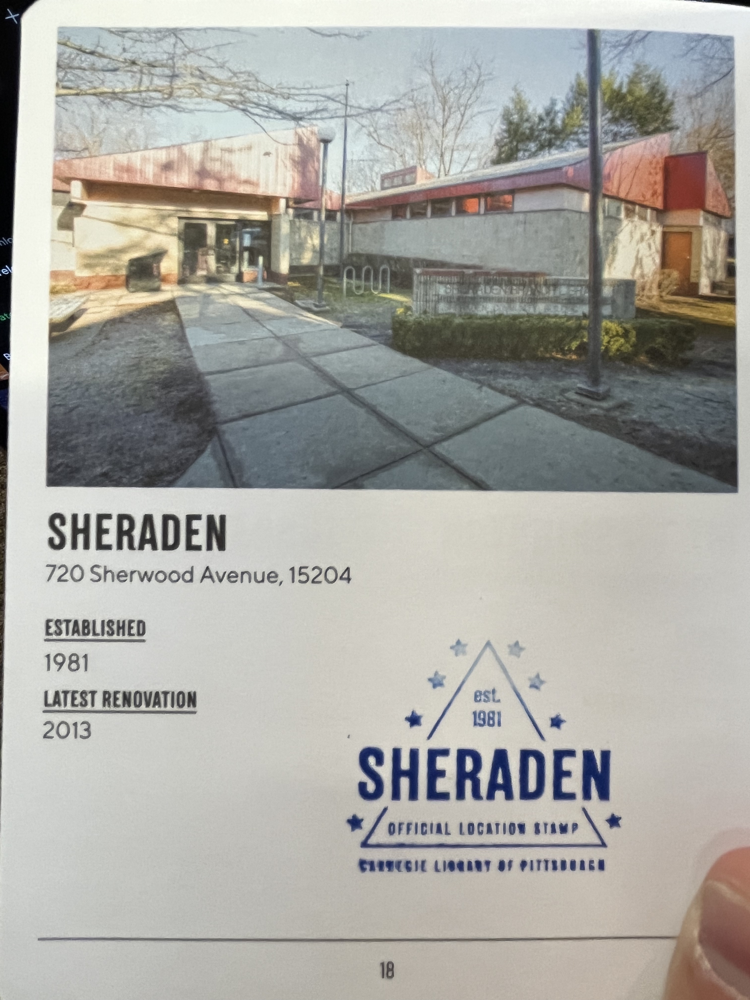
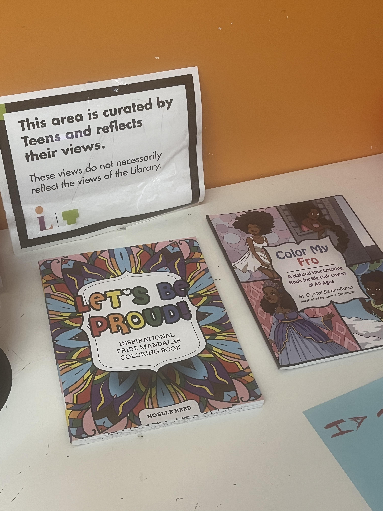
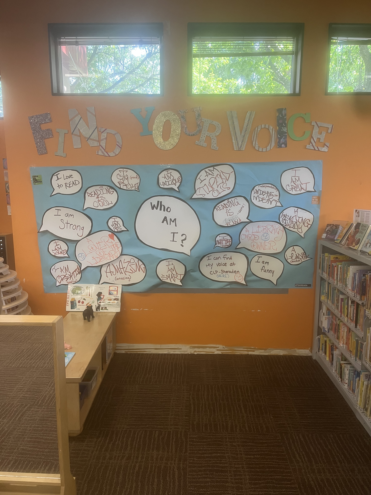
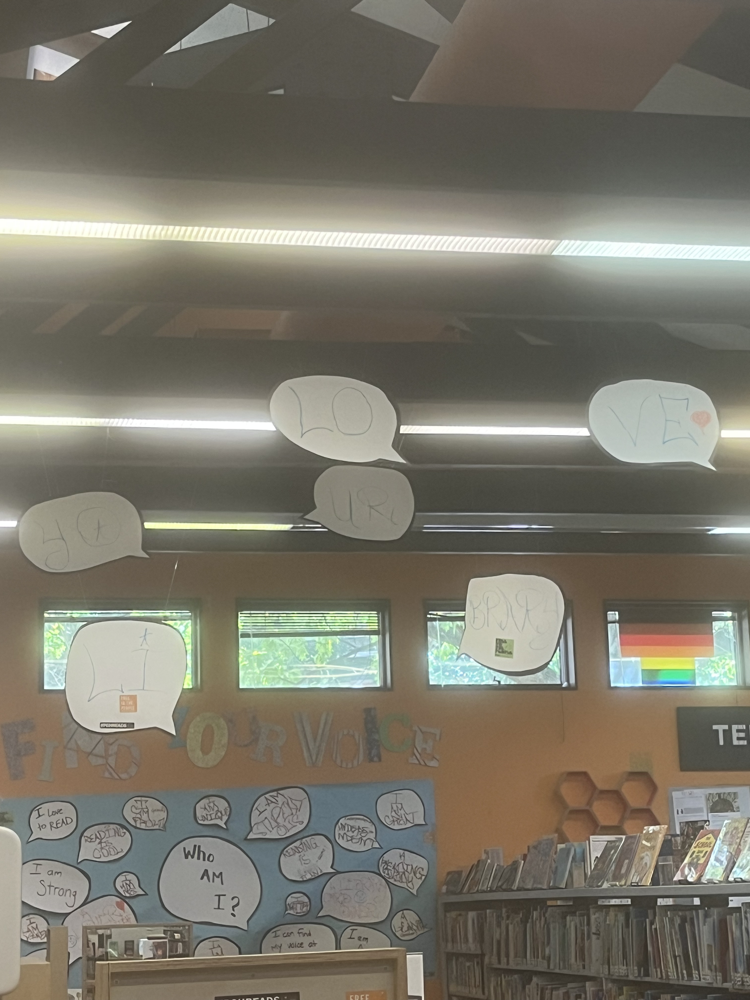
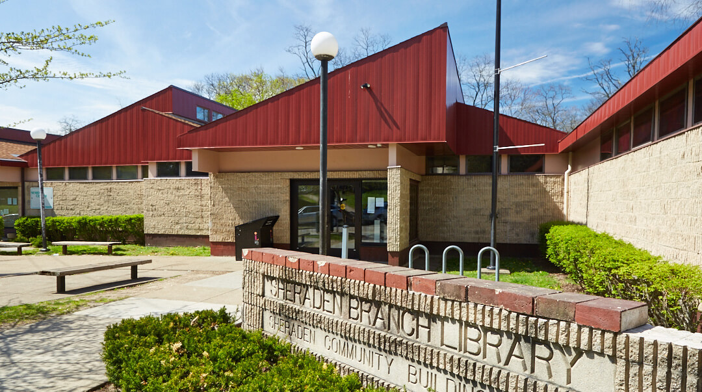
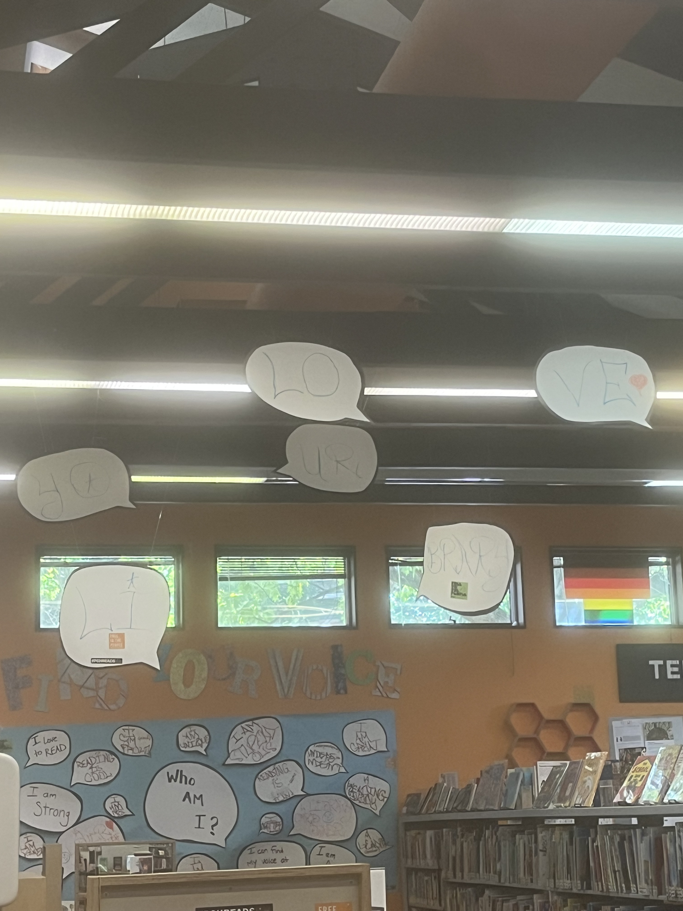
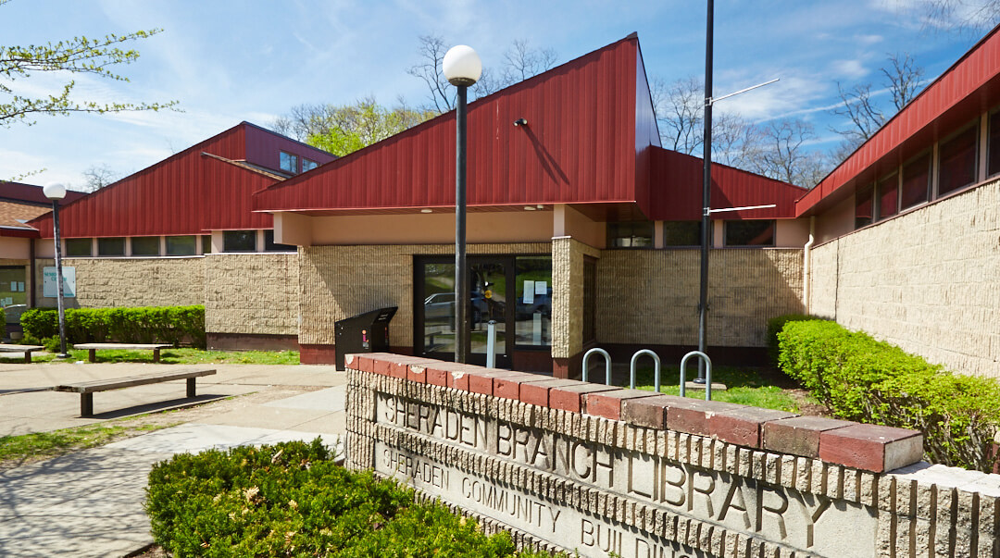
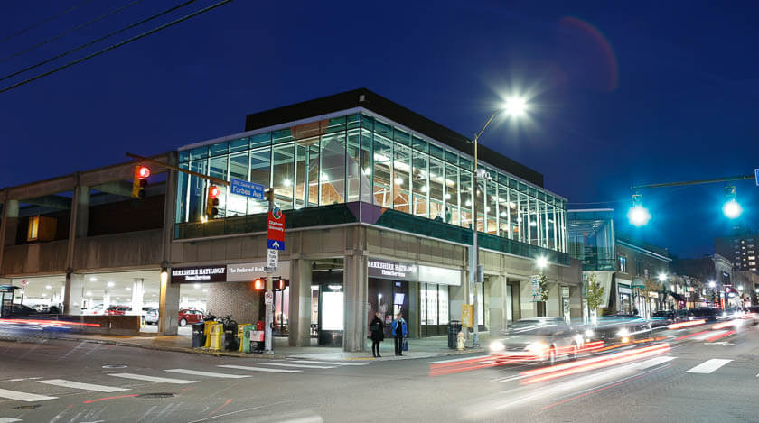
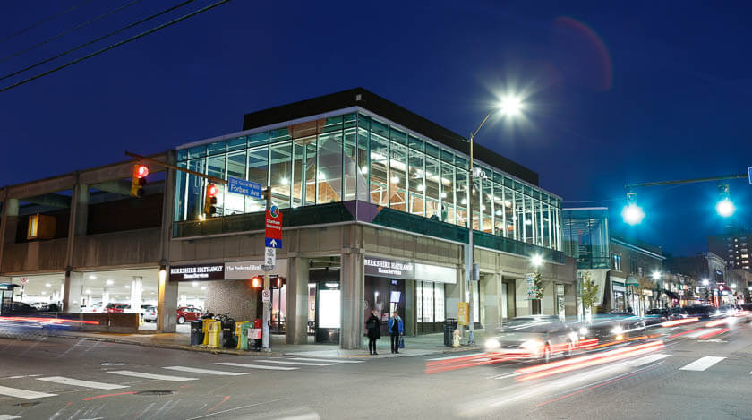

Quick Facts
- Tier: A
- Date Visited: 9/6/2023
- Travel time: 72 minutes
Notes
Today I went to Sheraden's library, the farthest I've traveled to a library so far (and probably overall). I had a good amount of time this afternoon and I needed to solve an algorithms problem so I figured I might as well make the bus trip out here and try to solve the problem on the way. I have a lot to say on this library, so I suppose I'll start with the superficial stuff. The library is fairly small, consisting of only one main room, but that doesn't detract from its overall quality. If you're looking for a specific book or piece of media, maybe this library isn't the one for you, but it has a great selection nonetheless. It's occurring to me I haven't talked about the books I've read on these trips, which as you may know, is what libraries are famous for. While here, I read the first chapter of a book called Land of Big Numbers by Te-Ping Chen. While admittedly I picked it up hoping it might be a statistical take on the genre of classics like Flatland due to the title's similarity to the "Law of Large Numbers", I was surprised at how captivated I was by the first chapter. It managed to set up the story of two twins with diverging lives in modern China in a surprisingly enchanting way - Chen's writing style may not be the most unique in the world, but it has an almost whimsical feeling that contrats the bleak subject matter. I also read volume two of Chainsaw Man which was fun as expected. I wish they has volume three, but it's checked out right now. Lastly, the teenspace flags, which are slowly seeming to be a staple of CLPs, were mostly the same. The pizza was gone, replaced with a checkerboard pattern, and the yellow monster was back. I wonder if there's any lore to them.
But, truth be told there's so much about this library that I loved which goes far beyond it's slightly run-down appearence as compared to the other libraries I've visited. I should preface this by saying that I am in no way whatsoever qualified to talk on socioeconomics, but I feel like I have to touch on it. Sheraden, to be blunt, is a low income neighborhood. Taking information from The Pittsburgh Neighborhood Project , in 2017, 29% of residents were below the national poverty line and it "ranked number 1 in 2017 regarding aggravated assault with a weapon in raw incidents." The school system is not great either, only offering a public K through 8 education. At the main school Langley K-8 , only 12% of students are proficient in reading and 4% in math, as determined by state testing. But, despite that, I'm sitting in a library where kids and teens are hanging out all reading and playing together. The library is packed to the brim with books to study for college entrance exams for students who want it - and the library is not shy about its numerous programs for students to read and learn together. Sitting here, I've noticed that every employee knows the name of every person that walks through the doors - no exageration whatsoever. It's obvious that there's a community built around this library - a place for the residents of Sheraden to hang out and spend time together. In reading about Sheraden to write this blog, the word I kept seeing pop up was "community" and it's easy to see why. Sheraden library gets an easy A tier for that alone.
Picture Gallery
   



Squirrel Hill
Quick Facts
- Tier: A
- Date Visited: 8/30/2023
- Travel time: 7 minutes
Notes
A really fantastic library! It has really great, cozy vibes once you get past the entrance up a bunch of stairs which seems like they might be being rennovated. The building itself is a really great piece of architecture and is a notable landmark on the bus ride from CMU so I never miss my Squirrel Hill stop. The library itself has a great collection of books and multimedia. I really appreciated the little displays they put up for notable books/genres. They had a Teenspace - I dared not step into to preserve its teenage sanctity - which had graphics on the window of my three favorite things from when I was a teenager: a yellow monster, pizza, and queer pride. I hope the teenagers of Squirrel Hill make good use of this place! The children's section was notably cute - I really appreciate them having computers dedicated for kids to use. I'm sure some future CS major will have gotten their start from these computers and the intro programming books nearby. And of course, shoutout to Nibbles to Squirrel.
Picture Gallery


 

Main (Oakland)
Quick Facts
- Tier: S✨
- Date Visited: 8/28/2023
- Travel time: TBD (Will measure soon)
Notes
Where better to start the journey than at the Main Library! (Conviniently also the closest by distance) It has everything you could possibly want in a library: tons of study space, books and other media to checkout galore, a really nice coffee shop (I recommend the chocolate-banana muffin). The building itself is gorgeous - I like to go to the second floor to study. Also, I ran into my friend Sasha when visiting for the first time, so that's a plus! The only downside of this library is that the rooms are very echoey, so it's easy to accidentally be very loud and disturb people when shuffling through a bag, for example. However, it's easily an S-tier library, highly recommended.
Picture Gallery